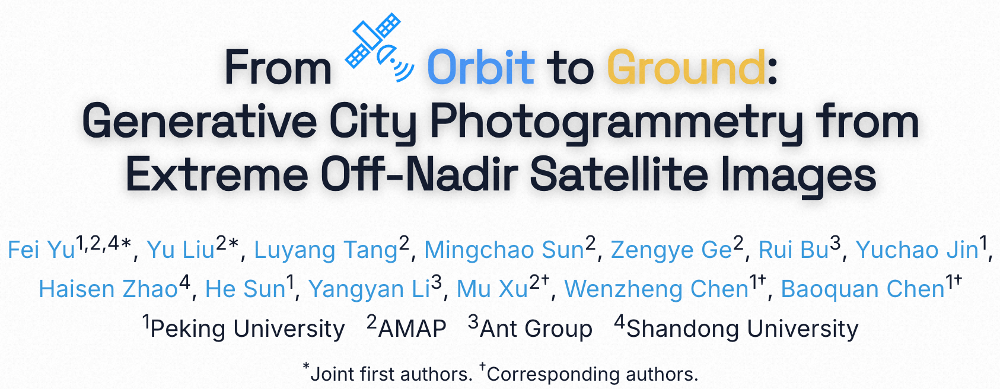
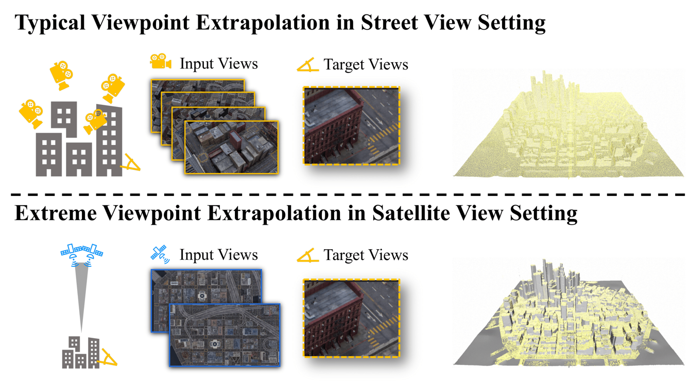
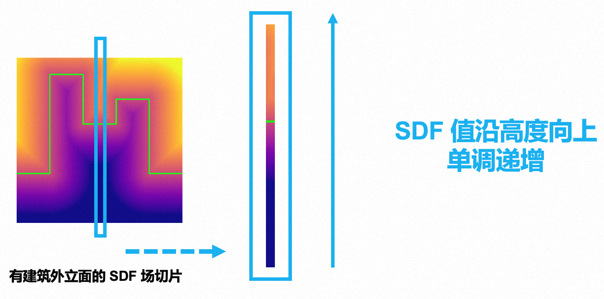
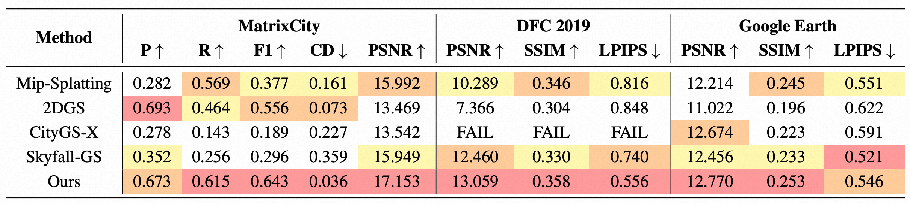
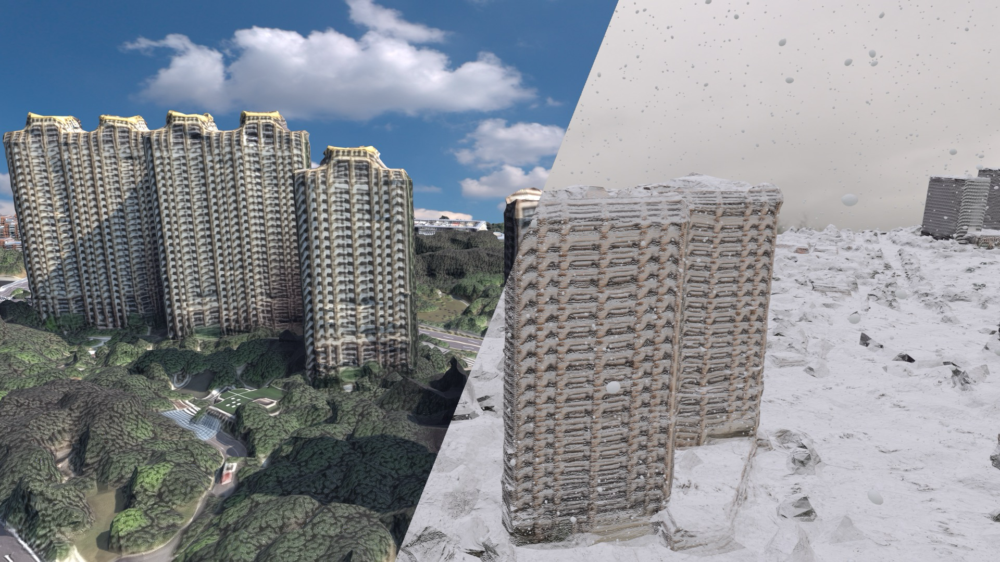

本研究由北京大学、高德地图研究团队联合完成。通讯作者包括北京大学博雅特聘教授，智能学院副院长陈宝权，北京大学助理教授陈文拯及高德地图徐牧。
试想一下，如果我们要为下一代 3A 大作（如《GTA 6》）构建一个 1:1 的纽约城，或者为城市级无人机送货系统规划一条在摩天大楼间穿梭的低空物流航线，甚至是为特大城市的应急响应系统构建一个毫厘毕现的数字底座。
通常，这需要数千人的美术团队耗时数年手工建模，或者动用昂贵的机群进行倾斜摄影扫街。 如何低成本、高效率地将庞大的“实体都市”复刻进数字空间，一直是计算机图形学与视觉领域试图攻克的终极难题。
最理想的数据源是卫星影像——它覆盖全球，唾手可得。但利用卫星图重建城市，长期以来被视为一个“不可能完成的任务”。
核心矛盾在于视角的巨大差异：卫星高悬于万米高空，以近乎垂直的俯视角度拍摄，而我们需要的，却是地面视角下依然细节丰富、结构完整的3D城市。
这种视角的极端外推（从顶视图推导侧视图），让目前最先进的 NeRF 和 3D Gaussian Splatting (3DGS) 也显得力不从心：建筑立面的几何空心与坍塌，导致渲染出的新视角一塌糊涂——一旦镜头拉近到地面，摩天大楼就会变成扭曲的“融化蜡像”，纹理更是一团模糊。
为了打破这一僵局，北大与高德团队提出了一种全新的生成式摄影测量方案 "Orbit2Ground"。它巧妙地结合了城市几何先验与生成式AI，仅凭稀疏的卫星图像，就构建出了令人惊叹的3D都市细节。
卫星图可以为屋顶形成良好的多视角立体视觉（Multi-View Stereo, MVS），但很难捕捉到建筑侧面的视差信息，这导致传统算法虽然能恢复出清晰的屋顶，但一处理侧面就会遭遇严重的几何崩塌——墙面支离破碎，充满悬浮的碎片。
为了补足缺失的侧面几何，团队利用了一个关键观察：绝大多数城市建筑的墙壁都是平滑外凸的，极少出现向内凹陷的结构。
基于此，团队提出了 Z-Monotonic SDF (Z 轴单调符号距离场)。其核心逻辑在于：约束 SDF 场在 Z 轴方向上单调递增。
这一数学约束的设计直接决定了最终的几何形态——因为 SDF 场的单调性，强制要求其生成的等值面（即几何表面）必须是连续且非凹陷的。这意味着，几何体不允许在中间断开、破碎或是向内塌陷。
正是这种“SDF单调 → 几何非凹”的强力约束，使得算法即便在仅有顶部观测数据的情况下，也能自动从屋顶向下“拉伸”出连续、闭合的完整墙壁，彻底根治了传统方法中“空心楼”和“几何破碎”的顽疾。
有了挺拔的“毛坯房”，下一步是解决纹理模糊的问题。
由于大气干扰和分辨率限制，卫星拍摄的侧面纹理往往不够清晰。为了解决这个问题，团队基于 FLUX 基础模型，训练了一个专门的确定性纹理修复网络作为“AI 装修队”。他们并没有让 AI 凭空捏造，而是让它基于卫星图提供的基础色调和结构，利用学习到的海量城市外观知识，对模糊的立面进行确定性修复。
通过将扩散模型微调为“确定性”模式，确保了在不同视角下生成的纹理是连贯统一的，避免了生成式 AI 常见的由随机性导致的“鬼影、模糊”等问题。
Orbit2Ground 将复杂的重建任务解耦为几何与外观两个阶段：
在 MatrixCity-Satellite、DFC 2019、Google Earth 等多个数据集的测试中，Orbit2Ground 展现了惊人的效果。
在几何精度上，它生成的模型不再有“悬浮碎片”或“坍塌墙面”；在视觉质量上，其 PSNR、SSIM 和 LPIPS 三项核心指标全面超越了 Mip-Splatting、2DGS 以及专门针对大场景设计的 CityGS-X 和 Skyfall-GS 等顶尖 (SOTA) 方法。
更令人兴奋的是，Orbit2Ground 展现了碾压级的视觉效果：
当其他方法在缺乏数据的区域产生云雾状的伪影时，Orbit2Ground 生成的是坚实、连贯的物理表面。在近距离的地面视角下，建筑立面的纹理清晰可辨，极大地提升了画面的真实感与沉浸感。
此外，与目前流行的 NeRF 或 3DGS 等“云雾状”的表达不同，Orbit2Ground 最终输出的是标准的 Mesh (网格) 模型。
这意味着什么？意味着这套资产不是只能看、不能碰的“全息影像”，而是可以直接导入 Unity、Unreal Engine 5 等主流引擎的实体资产。
开发者可以直接在这些模型上添加刚体碰撞、进行物理模拟（如积雪堆积、洪水淹没），或者进行光照渲染。这意味着我们拥有了一种低成本方案，能够生成不仅“看得清”，而且真正“用得上”的城市级数字资产。
未来，也许我们真的只需要几颗卫星，
就能在数字世界中复刻一个鲜活的地球。